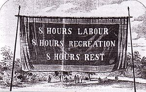
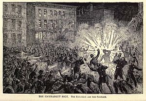
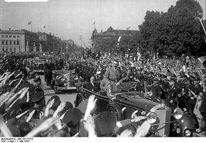

Május 1 a munka ünnepe
“Nyolc óra munka, nyolc óra pihenés, nyolc óra szórakozás”
Eredete

Az eredete a brit ipari forradalomig és a gyárak fénykoráig nyúlik vissza.
Egy gyártulajdonos közzétette munkásainak követeléseit és igényeit ezeknek a legfőbb, legfontosabb pontja az volt, hogy a napi akár 16 órás, de legalább 10 órás munkát csökkentsék le, és legyen egységesen napi 8 óra a munkaidő.
Mivel semmiféle jogi előrelépés nem történt, így az e köré szervezett tüntetések, tiltakozások, sztrájkok kifulladtak, az elégedetlen dolgozókat pedig elbocsájtották, és más gyárak sem vették fel őket a későbbiekben.
Az 1840-es években a nők és gyermekek munkaidejét maximum 10 órára szabályozták – ez előrelépésnek mondható, igaz, de nem igazán állt közel még ahhoz, amit a lázongó gyári munkások elvártak.
Valódi változás Ausztráliában történt először.
A tüntető munkások a Melbourne-i Egyetem épülete elől a Parlamentig masíroztak, a cél ezúttal is a napi legfeljebb 8 órás munkaidő kiharcolása is volt.
Ezúttal a dolgozók sikerrel jártak.
Innen ered az a szlogen is, amit a Beatrice együttes híres dalából már ismerhetünk:
“Nyolc óra munka, nyolc óra pihenés, nyolc óra szórakozás”.
A dátum kiválasztása

1886. május 1-jén a chicagói munkás szakszervezetek sztrájkot szerveztek a nyolc órás munkaidő bevezetéséért.
A többnapos tüntetés-sorozaton és a sztrájkokban 350 ezer munkás vett részt.
Az esemény negyedik napján, azaz május 4-én a helyi anarchista vezetők a Haymarket Square-re tiltakozó nagygyűlést hívtak össze, ekkor azonban a tüntető munkások közé vegyült anarchisták egy bombát dobtak a kivezényelt rendőrök közé, akik viszonzásul azonnal tüzet nyitottak.
Több tucat sebesült maradt a helyszínen, akik félve a letartóztatástól nem mentek kórházba.
1889. július 14-én Párizsban megalakult a II. Internacionálé (1889–1916 között működött, a munkásság szervezeteinek nemzetközi egyesülése volt), melyen úgy határoztak, hogy a három évvel korábbi chicagói tüntetés kezdetének negyedik évfordulóján, 1890. május 1-jén a szakszervezetek és egyéb munkásszerveződések együtt vonuljanak fel országszerte a nyolc órás munkaidő bevezetéséért, ahol az még nem történt meg, illetve a nemzetközi szolidaritás kifejezéséért.
A tüntetések az Egyesült Államokban olyan jól sikerültek, hogy a II. kongresszuson, 1891-ben május elsejét hivatalosan is a „munkásosztály nemzetközi összefogásának harcos ünnepévé” nyilvánították.
Haymarket Square 1886. május 4. a szocialista-anarchisták bombarobbantása.
Szintén ez az internacionálé deklarálta 1910-ben a VIII. kongresszusán a nők választójogának elérése céljából, szolidaritásból március 8-át nemzetközi nőnappá.
Szocialista ünnep lett Május elseje a 20. században fokozatosan vált szocialista ünneppé, elsősorban a Szovjetunióban és a volt szocialista országokban lett nemzeti ünnep. Ezzel párhuzamosan az eredetileg a munkások ünnepének hívott napot a munka ünnepévé változtatták a szocialista blokkban, mivel ez jobban megfelelt az uralkodó rezsimeknek. Az elnevezés a diktatúrák bukása után is megmaradt a volt szocialista országokban.
Itthon az idősebb generáció legtöbb tagja még úgy emlékszik a május elsejékre, mint a felvonulások, a majálisok és a sör-virsli ünnepére. Ma már a legtöbb embernek annyit jelent a május elseje, hogy ez a késő tavasz-kora nyár első szabadnapja, a strandszezon kezdete.
A munka ünnepe mellett más fontos események is történtek hazánkban ezen a napon: 1881-ben például május elsején kezdett működni Puskás Tivadar találmánya, az első budapesti Telefonközpont. A Magyar Televízió 1957-ben ezen a napon kezdte meg hivatalosan a működését, hat éve pedig május elsején lettünk az Európai Unió tagjai.
Nemzeti ünnepé válás

A nemzetközi szocialista, szakszervezeti és munkásmozgalmak térnyerésével és növekedésével együtt bővültek a munkások jogai és lehetőségei is, mely során a hagyományos munkásünnep fokozatosan nemzeti ünneppé nőtte ki magát a világ számos országában.
Az Egyesült Államokban már 1894 óta nemzeti ünnep a munka ünnepe, de a más országokban szokásostól eltérően szeptember első hétfőjén tartják.
Franciaországban 1919 óta,Svédországban 1939 óta,Brazíliában 1924 óta nemzeti ünnep a munka ünnepe.
Napjainkban a világ több mint 160 országában ünnepnap május elseje.
A különböző diktatúrák különféleképpen viszonyultak a munka ünnepéhez.
Németországban Hitler 1933-ban hatalomra jutva fizetett nemzeti ünneppé nyilvánította május elsejét.
1938-ban a német ifjúság a berlini olimpiai stadionba vonult, ahol százezres tömeg sorakozott fel Hitler üdvözlésére.
Spanyolországban, ahol május elseje 1931-től nemzeti ünnep volt, Francisco Franco diktatúrájának idején a munka ünnepéről való megemlékezés előbb a tiltott, később a megtűrt kategóriába esett, és csak a hetvenes évektől lehetett újra szabadon ünnepelni május elsején.
Olaszországban a Benito Mussolini diktatúrájában eltörölték a munka ünnepét amit azelőtt már a 19 század vége óta tartottak és csak 1945-től lehetett ismét megemlékezni május elsejéről.
A kommunista rendszerek – melyeknek ideológiájában központi szerepet játszott a dolgozó nép kiemelt ünnepként kezelték május elsejét.
A kommunista hatalomátvétel nyomán politikai megfontolásból az eredetileg a „munkások ünnepének” hívott napot a munkások, parasztok és értelmiségiek ünnepévé, a „munka ünnepévé” változtatták a keleti blokkot alkotó országokban.
Magyarországon 1946 óta nemzeti ünnep május elseje.[16] A rendszerváltás után a munkavállalók szolidaritási napjának „a munka ünnepe” elnevezése maradt meg.
A világ országainak túlnyomó többségéhez hasonlóan Magyarországon jelenleg is hivatalos ünnep ez a nap.